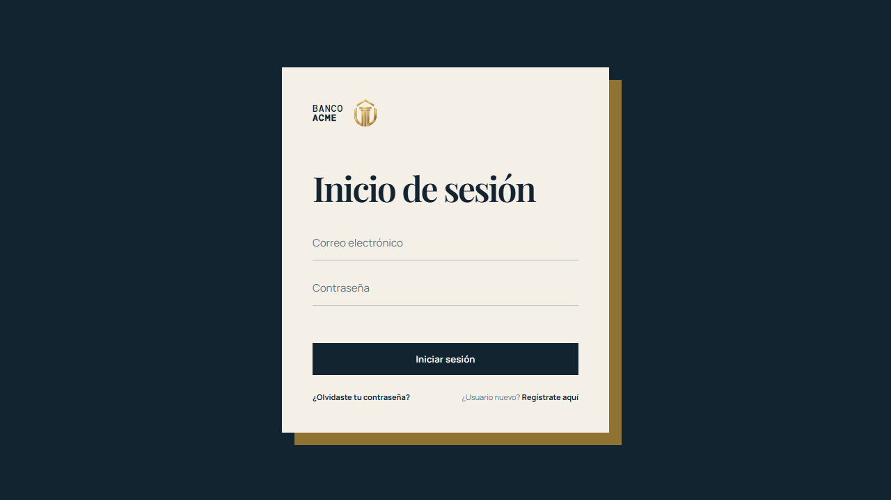

01 / BANCA SIMULADA2025
ACME Bank
Aplicación web de autogestión bancaria simulada para crear usuarios, consultar saldos y realizar operaciones.

EL RETO
Representar operaciones bancarias habituales en una aplicación de práctica clara para el usuario.
MI APORTE
Desarrollé la lógica de interacción e implementé validaciones de datos para mejorar la consistencia de la información y la experiencia de uso.
RESULTADO
Un flujo de banca simulada que puede explorarse en una demo pública. No procesa dinero real.